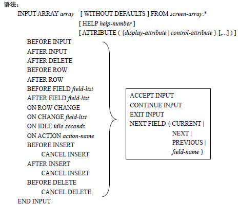

这一篇讲解一下genero bdl语言。
Genero BDL 架构
DATABASE：资料库
GLOBAL：程式所使用的外部变数
MAIN：主程式
FUNCTION：函式
REPORT：报表
.4gl-.42m
.per-.42f
Genero BDL 语言特点：
- 切分为 Client、Server 架构（GDC 与fgl），增进运行效率
- 以 XML Bsae 做为Client 及Server 端数据传递的架构
- 支持更多不同平台（OS）及数据库系统
- 可在运行阶段动态调整画面输出的格式（Layout Styles）
- 在部份新增的功能中引入基本的对象（Object）概念
看第一章，第三章，第四章，第八章，第九章，第十章
画面档FORM组成
扩展名：per
SCHEMA section（非必要部分）
设置设计画面时，所需要引用到的数据库。
如果在『per』中没有指定SCHEMA，系统缺省为FORMONLY，即表示此不引用数据库中字段型态、长度等数据。若未设置，则对后续SECTION 影响有下列二点：
- 不得使用 TABLES SECTION。
- 需于 ATTRIBUTES SECTION 中指定字段型态。
每一个 Form 都可以设置一个 SCHEMA section ，且可以定义任何 Database SCHEMA，当 FORM 字段被定义时会参考到此处所指定的 SCHEMA。
SCHEMA section 需注意到的重点是：
- 若制作 FORM 时，字段都不参考 SCHEMA 内容时，则 SCHEMA section 可写为 SCHEMA FORMONLY，在 ATTRIBUTES Section 中字段可用 FORMONLY.字段名称来定义字段 内容。
- 若设为 SCHEMA FORMONLY 时，不得使用 TABLES SECTION。
- 若设置为 SCHEMA db 【实际 database schema 时】，且设置 TABLE section 时，可参照 引用字段型态、长度进入 ATTRIBUTES section 段。
示例：
SCHEMA FORMONLY |
或SCHEMA example_database
LAYOUT (TEXT="SCHEMA SECTION")
GRID grid_id
{
Name [a ]
}
END --GRID
END --LAYOUT
TABLES example_table
ATTRIBUTES
EDIT a = a;
ACTION DEFAULT section（非必要部分）
定义 ACTION 显示于画面上的名称值及快速键设置。
ACTION DEFAULTS 主要是定义功能按键（Action）的属性，包含显示在画面文件上的文字、快速键（1.31 以上版本允许设置至多三组）、显示图片（注）、弹出式说明（Hint、Comments） 等属性，须搭配 4GL 程序才会有作用。
示例：
ACTION DEFAULTS |
编译之后可以得到如下的运行画面：
TOPMENU section（非必要部分）
定义画面中的 TOPMENU 结构。
TOOLBAR section（非必要部分）
定义画面中的 TOOLBAR 结构。
LAYOUT section（非必要部分）
定义画面样式的主要 SECTION，在本SECTION 中须采用对象的概念，任何的设置均应以Container 视之，在结束处需加上END 注记以标示结束。
TABLES section（非必要部分）
设置屏幕画面的显示字段所对应的数据库的 TABLE 名称。
ATTRIBUTES section（非必要部分）
在 LAYOUT SECTION 中出现的字段、TAG 等，均需在此段中定义其类型或属性。
INSTRUCTION section（非必要部分）
定义屏幕数组。当使用屏幕数组时才需定义。
画面档（PER）中只可用『–』作为批注符号，标示处至行尾均视为批注。
变量及运算
变量的定义
直接定义
DEFINE employee_no CHAR(10) |
对应数据库字段
DATABASE database_id |
上面的示范，定义p_employee_no 与数据库中的employee_file 这个table 的employee_no 字段有相同的数据型态。
变量的型态
CHAR |
变量的集合（Records）
直接定义
MAIN |
此示范中，直接定义 rec 这个Records 中的各个变量型态。
对应数据库字段
DATABASE example_database |
此示范中，定义cust01 这个Record 的变量与数据库中的customer 这个table 的字段有相同
的名称及数据型态。若在这组变量中有穿插非同一TABLE 字段，或是需要做顺序上的调动，
则必需参照cust02 的作法，将变量组中的每一个项目独立写出。
变数的设置
语法：LET variable = expression
示范：DATABASE ds
MAIN
DEFINE c1, c2 CHAR(10)
LET c1 = "Genero"
LET c2 = c1
END MAIN
注：若变量类型为 CHAR 和变量类型为VARCHAR 时，指定给予的值有差异。
DATABASE ds |
初始化一组变数的值
若要初始化一组 RECORD 变数为NULL，或者是初始化为数据库Table 的缺省值，可利用
INITIALIZE。
语法：INITIALIZE 变数串行 { LIKE 字段串行 | TO NULL }
示范：
DATABASE ds |
预定义完成变数
以下说明一些系统的预先定义变量及用途：
- INT_FLAG：当设置DEFER INTERRUPT 时，系统即会在用户每次按下『中断键』时，将此变数设置为『TRUE』，须要程序恢复回原值（FALSE）。
- STATUS：储存每次SQL 的运行状态。
常数的定义
CONSTANT c1 = "Drink" -- 自行宣告为 STRING |
预定义完成常数
- NULL：即表示NULL。
- TRUE：表示布尔逻辑中的『非零』值，缺省为『1』，但不可视为『1』运算。
- FALSE：表示布尔逻辑中的『零』值，缺省为『0』，但不可视为『0』运算。
- NOTFOUND：表示SQL 信息中的『找不到notfound』，缺省为『100』，但不可视为『100』运算。
表达式
比较表达式
数值表达式
MAIN |
字符串表达式
MAIN |
字符串链接：,
||
str[m,n] LET i = "TIPTOP GP Genero BDL"
LET j= i[1,9]
DISPLAY " i= ", i
Show: i=TIPTOP GP
USING：针对数值或日期设置其打印或显示于画面上的格式，若需设置时，须注意溢位（overflow）的问题。LET salary =1000
PRINT salary USING " $##,### "
DISPLAY "yyyy-mm-dd :",TODAY USING "yyyy-mm-dd"
Show1: $ _1,000
Show1: yyyy-mm-dd :2004-06-11
CLIPPED：清除尾部空白 LET i = "TIPTOP GP "
LET j = "Genero BDL"
DISPLAY “i&j=", i CLIPPED, j CLIPPED
Show: i&j= TIPTOP GP Genero BDL
SPACES：输出空白字符串 LET i = "TIPTOP GP "
LET j = "Genero BDL"
DISPLAY “i&j=", i ,8 SPACES, j CLIPPED
Show: i&j= TIPTOP GP Genero BDL
逻辑、日期、字段表达式
全域变数指定
语法一：直接写定 GLOBALS 区块GLOBALS
declaration-statement
[,...]
END GLOBALS
语法二：读入已写好的共同设置档（外部档案）。GLOBALS "filename"
变数的生命周期
DATABASE ds |
程控流程
Module 程序架构
程序部份可区分为MAIN( )函式、一般FUNCTION( )函式及报表结构定义REPORT( )函式等。
MAIN( ) 函式
MAIN( )函式是程序运行的入口，一个完整可运行的程序必定仅含一个MAIN( )函式。
示范：
MAIN |
DEFER 设置
此设置可定义程序是否要拦截『当用户按下中断（interrupt）或离开（quit）键』时所送出
的系统讯号。
语法：DEFER { INTERRUPT | QUIT }
OPTIONS 设置
此段设置可变更系统缺省的选项。
Exceptions 设置
定义当遇到 SQL 错误时，系统要采取何种方式因应。此设置不限MAIN( )函式可设置，此设置在程序中想改变因应方式时可再次指定，即可以新设置方式处理。
语法：WHENEVER [ANY] ERROR { CONTINUE | STOP | CALL function | GOTO label }
MAIN |
一般 FUNCTION( ) 函式
运行某个特定功能的子函式，程序中可将某些功能独立编写为一个个的子函式，以供互相呼叫之用，如此即可趋近模块化的目标。同一支完整作业内的Function 名称不能相同。
示范：
MAIN |
报表结构 REPORT( )函式
为函式的一种，专门用来设置报表打印格式，后续章节有详细的介绍。
REPORT 结构示范：
REPORT test_rep(sr) |
4GL 批注符号
- {}：可以将某个范围做备注。
- #：将某行做备注。
- –：将某行做备注。
CALL
运行指定的函式（Function），若有回传值，以RETURNING 接回。
语法：CALL function ( [ parameter [,…] ] ) [ RETURNING variable [,…] ]
RETURN
传回原呼叫函式所需的变量值，并停止此子函式的运行。
语法：RETURN [ value [,…] ]
示范一：回传单一值
MAIN |
示范二：回传单一值（布尔值）MAIN
IF foo() THEN
DISPLAY "Choice is OK!”
END IF
END MAIN
FUNCTION foo()
RETURN TRUE
END FUNCTION
示范三：回传多值MAIN
DEFINE var1 CHAR(15)
DEFINE var2 CHAR(15)
CALL foo() RETURNING var1, var2
DISPLAY var1, var2
END MAIN
FUNCTION foo()
DEFINE r1 CHAR(15)
DEFINE r2 CHAR(15)
LET r1 = "return value 1"
LET r2 = "return value 2"
RETURN r1, r2
END FUNCTION
示范4-1：(test1.4gl)MAIN
DISPLAY "MAIN FUNCTION"
CALL a1()
CALL a2()
RUN "fglrun test3"
END MAIN
FUNCTION a1()
DISPLAY "SUB FUNCTION a1()"
END FUNCTION
以上程序段会呼叫另外两个 Function，并且利用RUN 指令运行一道unix 指令。
示范 4-2：(test2.4gl )FUNCTION a2()
# a2 function
DISPLAY "SUB FUNCTION a2()"
END FUNCTION
示范 4-3：(test3.4gl )MAIN
DISPLAY "This is test3.4gl"
END MAIN
IF
依条件运行程序
语法：IF condition THEN
statement
[...]
[ ELSE
statement
[...]
]
END IF
示范：MAIN
DEFINE name CHAR(20)
LET name = "John Smith"
IF name MATCHES "John*" THEN
DISPLAY "The first name is too common to be displayed."
IF name MATCHES "*Smith" THEN
DISPLAY "Even the last name is too common to be displayed."
END IF
ELSE
DISPLAY "The name is " , name , "."
END IF
END MAIN
CASE
运行符合条件的特定程序段
语法一：CASE expression-1
WHEN expression-2
{ statement | EXIT CASE }
[...]
[ OTHERWISE
{ statement | EXIT CASE }
[...]
]
END CASE
说明：若判别式很单纯，例如：只需判断一个数字的数值，因该值不同而有不同的选项时，
可采用此写法（如下列示范）。若判断式较复杂，或可能同时出现两种以上的条件（成立）
时，请改用语法二。
示范：
MAIN |
语法二：CASE
WHEN boolean-expression
{ statement | EXIT CASE }
[...]
[ OTHERWISE
{ statement | EXIT CASE }
[...]
]
END CASE
示范：MAIN
DEFINE v CHAR(10)
LET v = "C1"
CASE
WHEN ( v="C1" OR v="C2" )
DISPLAY "Value is either C1 or C2"
WHEN ( v="C3" OR v="C4" )
DISPLAY "Value is either C3 or C4"
OTHERWISE
DISPLAY "Unexpected value"
END CASE
END MAIN
注：当采用此种语法时需注意：需避免同时有两种情况成立的情形发生。若在未注意
的状况下发生，则系统仅会走第一条符合条件的路径。MAIN
DEFINE a,b INT
LET a = b := 10
CASE
WHEN a=10 DISPLAY " a is ok "
WHEN b=20 DISPLAY " b is ok "
OTHERWISE DISPLAY " nothing is ok "
END CASE
END MAIN
画面仅会显示『 a is ok 』
FOR
依指定的次数运行程序
语法：FOR counter = start TO finish [ STEP value ]
statement
[...]
END FOR
示范：
MAIN |
WHILE
运行程序直到条件式不成立为止
语法：WHILE b-expression
statement
[...]
END WHILE
示范：
MAIN |
CONTINUE
重新运行循环
语法：CONTINUE { FOR | FOREACH | MENU | CONSTRUCT | INPUT | WHILE }
示范：MAIN
DEFINE i INTEGER
LET i = 0
WHILE i < 5
LET i = i + 1
DISPLAY "i=" || i
CONTINUE WHILE
DISPLAY "This will never be displayed !"
END WHILE
END MAIN
EXIT离开控制段
语法：EXIT { CASE | FOR | MENU | CONSTRUCT | FOREACH | REPORT | DISPLAY | INPUT | WHILE | PROGRAM（注） }
示范：MAIN
DEFINE i INTEGER
LET i = 0
WHILE TRUE
DISPLAY "This is an infinite loop. How would you get out of here ?"
LET i = i + 1
IF i = 100 THEN
EXIT WHILE
END IF
END WHILE
DISPLAY "Well done."
END MAIN
注：若程序运行到 EXIT PROGRAM，则表示『正常离开作业』（非异常中止），所以不会有任何stderr 码传出。但此指令后可跟随 exit_code，exit_code 可为8bit 的数值，系统传出时会转换为正整数，以供原呼叫此作业之程序判别状态。
SLEEP
程序依指定秒数暂停
语法： SLEEP seconds
注意：如果seconds < 0 或 seconds IS NULL，则程序不会停止。
示范：MAIN
DISPLAY "Please wait 5 seconds..."
SLEEP 5
DISPLAY "Thank you."
END MAIN
EL
宣告程序注标。
语法： LABEL label-id：
注意：结尾处有一冒号（：）。
GOTO
移到指定的程序段继续运行（为了程序的易读性与结构性，建议勿使用此指令）。
语法： GOTO： label-id
示范：MAIN
DISPLAY "Before GOTO"
GOTO: label_id1
DISPLAY "Never Been Displayed"
LABEL label_id1:
DISPLAY "After GOTO"
END MAIN
CURSOR 的应用
数据的查询、更改
在处理数据时，若只有单笔数据的选取，则可用单纯的SQL 指令即可（本书设置各位读者对SQL 指令均已熟悉，故不再说明SQL 指令的写法，请参阅其它SQL 语言介绍专书）。
若是要抓取多笔数据处理时，就会因抓取的特性不同（例如：一次只抓一笔数据处理，完成后再抓次笔，如『个人数据表』；或一次全部抓取，一起编辑，如『个人门禁进出记录表』等），而须使用不同的指标（CURSOR）。
在介绍指标（CURSOR）前，先介绍其它将应用到的相关指令。
CONSTRUCT
此指令可让用户在画面上录入查询条件（通称Query By Example；QBE），以取得用户的查询范围数据。用户的查询数据会组成一串WHERE 指令（参下页批注），并置入设置好的变数中。若用户未录入任何条件，即按下『确定』离开CONSTRUCT，系统也会自动于此变量中补入『1=1』。
语法二：若字段名称和变量名称相同时，也可改采下列写法：
CONSTRUCT BY NAME char_variable ON column_list
说明：
- char_variable 为接取用户录入数据的字符串变量（建议以STRING 格式变量接取）
- column_list 为对应到表格（TABLE）的字段名称清单（逗号隔开）
- field_list 为画面（WINDOW 或是FORM）上的字段代码清单（逗号隔开）
- 若有增加控制区段（CONTROL BLOCK，如ON ACTION 等），则就要加上『ENDCONSTRUCT』
示范：CONSTRUCT BY NAME l_str ON employee , salary
ON IDLE 10
EXIT PROGRAM
END CONSTRUCT
PREPARE
若已经得到一个完整的WHERE 条件后，接下来即可将此条件，组合成SQL 字符串，再转换为一个完整且可以抓取符合条件的SQL 指令。
运行完 CONSTRUCT 后，系统只能得到一个『SQL 字符串（如上页示范的l_str）』，并非为『可运行的指令』，因此必须透过PREPARE 指令，将此SQL 字符串转换成『可运行的SQL指令』PREPARE 会将字符串传入数据库检查语法的正确性，再回传予一个prepared-id 以供后续呼叫之用。
语法：PREPARE statement-name FROM char_variable
说明：
- statement-name 是为一个PREPARE 完成后的替代代码（prepared-id）
- 运行 PREPARE 指令前须先组好SELECT 叙述。
FREE
释放 PREPARE 的记录。
语法：FREE statement-name
示范：LET l_str = “employee='1000' AND salary>'30000’ “
LET l_sql = “ SELECT * FROM employee_file WHERE “,l_str
PREPARE emp_pre FROM l_sql
…
FREE emp_pre
数据的查询
Genero BDL 中有两种查询用的指标（CURSOR）可以运用在资料的查询：
SCROLLING CURSOR
通常运用在单档控制或查询类的程序，如『个人数据表』般的作业，可以随机抓取数据，一次一笔，再处理完后可以选择往前一比、往后一笔或往这个查询序列中的任何一笔数据移动的指针（CURSOR）。
语法：DECLARE cursor_id SCROLL CURSOR [WITH HOLD] FOR sql statement
OPEN cursor_id [USING value]
FETCH [first|last|previous|next| cursor_id INTO variable
CLOSE cursor_id
Non-SCROLLING CURSOR
通常运用在双档控制程序或报表程序，如『个人出缺勤统计表』般的作业，抓取数据是依序（seguential）的方式，一次可以将合条件要求的资料一笔接着一笔的抓出，直到资料全数抓完（或被强制终止）为止。
语法：DECLARE cursor_id CURSOR [WITH HOLD] FOR sql statement
FOREACH [first|last|previous|next| cursor_id INTO variable
…
END FOREACH
SCROLLING CURSOR
在运行『个人基本数据』的查询时，大多都会希望调用出来的资料，一次只有一个人的数据，这样比较容易聚焦，待查询或编修等工作完成后，再选择上一笔（或下一笔、任何一笔）数据来继续处理。如这类的『一次仅叫用单笔数据』，即为SCROLLING CURSOR 的作业范围。组成SCROLLING CURSOR 需以下列指令组成：
DECLARE 叙述
语法：DECLARE cursor_id SCROLL CURSOR FROM [ prepared_id | char_variable ] 或 DECLARE cursor_id SCROLL CURSOR FOR select_statement
说明：DECLARE 后面可用『FOR 接SQL 查询指令』或用『FROM 接prepared-id 或是一个SQL查询字符串（注）』。
OPEN 叙述
语法：OPEN cursor_id
说明：
- 本指令可用 STATUS 来检视是否运行成功。
- 在后续要使用 cursor 时，之前要先将cursor OPEN 起来。
- 此叙述仅决定符合的数据，并不是真正从数据库中撷取数据。
注：在DECLARE 前可用PREPARE 指令运行SQL 字符串的转换及检查，除下列两种情况之外，其它情形均不一定需要写PREPARE 指令：
- SQL 查询指令中含有问号（Question Mark，参考本章中『USING 的用法』）
- SQL 查询指令中，拥有多组的数据可能来源（tables），如
CASE condiction |
如上述情况，就必需使用 PREPARE 指令。
FETCH 叙述
语法：FETCH cursor_id INTO program_variable
说明：当宣告为 SCROLLING CURSOR 时，可以配合以下移动Cursor 的指令：
CLOSE 叙述
语法：CLOSE cursor_id
说明：关闭并释放指标（CURSOR）的储存空间。
示范：DATABASE ds
MAIN
DEFINE a STRING
DEFINE b,c CHAR(10)
DECLARE test01 SCROLL CURSOR FOR
SELECT zz01 FROM zz_file WHERE zz01 = “axmt410”
OPEN test01
FETCH FIRST test01 INTO b
DISPLAY b
LET c = "axmt410"
LET a = "SELECT zz01 FROM zz_file WHERE zz01='",c CLIPPED,"' "
DECLARE test02 SCROLL CURSOR FROM a
OPEN test02
FETCH LAST test02 INTO b
DISPLAY b
END MAIN
Non-SCROLLING CURSOR
如查询『个人出缺勤统计表』（或打印）时，就会希望系统将指定人的数据全数列示出来（因为不希望看一笔、按键、再看一笔…），如果要达到这个动作，就必须改用Non-SCROLLINGCURSOR。以下分别列出Non-ScrollING 所需的控制指令：
DECLARE 叙述
语法：DECLARE cursor_id CURSOR FROM [ prepared_id | char_variable ]或DECLARE cursor_id CURSOR FOR select_statement
说明：因为是『Non-SCROLLING CURSOR』，所以直接写『CURSOR』即可。
FOREACH（LOOP）叙述
示范：
MAIN |
数据的锁定
当要进行数据的更改（UPDATE）时，最令人担心的就是有多人同时修到同一笔数据，因此，如何在开始编修前进行数据锁定（LOCK），以确保同时间只有一人能取得更改权，就成了在撰写程序时应注意的事。Genero BDL 中延续INFORMIX 4GL 的作法，采用LOCKINGCURSOR 对数据进行锁定。
LOCKING CURSOR
又称『FOR UPDATE CURSOR』。通常运用在数据更新（UPDATE）程序段，将数据进行一个上锁的动作，以避免两组以上的联机同时再更新同一TABLE 下的同一笔数据（RECORD）。如果未作LOCK 的动作，可能再抓取数据的同时，有其它人正在进行数据的异动。此CURSOR 不属于数据查询的CURSOR，而需列为更新的CURSOR。
语法：DECLARE cursor_name CURSOR FOR sql statement FOR UPDATE [NOWAIT]
OPEN cursor_id [USING value]
FETCH cursor_id INTO variable
CLOSE cursor_id
DECLARE 叙述
语法：DECLARE cursor_name CURSOR FOR select_statement FOR UPDATE [NOWAIT]
说明：
- 此处与 SCROLL CURSOR 或Non-SCROLL CURSOR 最大的差异。在于SQL 查询指令的最后须加上『FOR UPDATE（ORACLE 数据库需再加上NOWAIT）』，以标明此CURSOR 为LOCKING CURSOR。
- 此处亦可使用 FROM char_variable 方式来定义SQL 查询指令。
OPEN 叙述
语法：OPEN cursor_id
FETCH 叙述
语法：FETCH cursor_id INTO program_variable
说明：此叙述除从数据库中取得资料外，在LOCKING CURSOR 的状态下，还会将所抓取到的资料锁住（LOCK），直到程序运行CLOSE cursor_id 的指令才会释放。
CLOSE 叙述
语法：CLOSE cursor_id
说明：关闭并释放 CURSOR，待释放完成后，系统才会将被锁定的数据释放。
示范：DATABASE ds
MAIN
DEFINE g_gav01 LIKE gav_file.gav01
DEFINE g_gav08 LIKE gav_file.gav08
LET g_forupd_sql = "SELECT * from gav_file WHERE gav01=? AND gav08=? ",
" FOR UPDATE "
DECLARE p_per_lock_u CURSOR FROM g_forupd_sql
OPEN p_per_lock_u USING g_gav01,g_gav08
OPEN p_per_lock_u USING g_gav01,g_gav08
IF STATUS THEN
CLOSE p_per_lock_u
RETURN
END IF
FETCH p_per_lock_u INTO g_gav_lock.*
IF SQLCA.sqlcode THEN
CLOSE p_per_lock_u
RETURN
END IF
CLOSE p_per_lock_u
END MAIN
USING 的使用时机
此处的『USING』和先前谈变量格式输出的USING 有不同的意义。
有时，在组合 SQL 查询指令时，可能尚未取得相关的KEY 值供选取资料用，又不可以随意填不相关的值进入系统。
如上方示范：在组查询的SQL 指令时，根本无法确知将要锁定的资料为何，因此『可以在SQL 查询指令中使用问号（？），待后续要使用此CURSOR 时，再将已知值用USING 传入』。
语法：LET sql statement = “SELECT * FROM table_id WHERE key_value = ? “
DECLARE cursor_name CURSOR FOR sql statement FOR UPDATE [NOWAIT]
OPEN cursor_id USING value
说明：
- 问号（？）可以有多个。
- USING 必需跟在OPEN 后方，若有多个问绕，则此处需依序对映，并以逗号隔开。
TRANSACTION
当程序中运行『UPDATE』、『INSERT』、『DELETE』等指令时，都直接对数据库的数据进行异动，若有时数据需要多表格的同时连动时，会期望『所有的动作一起写入或一起毁弃』时，可采用『TRANSACTION』作法。
在一个 TRANSACTION 开始后（以『BEGIN WORK』指令开始），所有的『UPDATE』、『INSERT』、『DELETE』指令均不会对实体数据库做动作，一直到结束后，依照不同的条件进行写入实体数据库（以『COMMIT WORK』指令做整批写入）、或运行变更毁弃（以『ROLLBACK WORK』指令进行）的动作。
语法示范：BEGIN WORK
[ UPDATE statement ]
[ INSERT statement ]
[ DELETE statement ]
IF ( condiction ) THEN
COMMINT WORK
ELSE
ROLLBACK WORK
END IF
说明：
- BEGIN WORK 开始后，一定要有COMMIT WORK 或ROLLBACK WORK 做数据是否写入的判断。
- TRANSACTION 区中的程序尽量不要太长，以免影响需要调用同笔数据的其它用户（但用户本身不受影响，未COMMIT WORK 前仍可调用已变更数据）。
- 有些 DDL 指令（如CREATE TABLE）会有自动COMMIT WORK 功能。
- 当 COMMIT WORK（或ROLLBACK WORK）时，会自动关闭无宣告『WITH HOLD』的CURSOR。
大量运行同一 SQL 指令（EXECUTE）
当系统要运行大量的同一 SQL 指令（例如：要在工作数据中连续INSERT 十年的工作日数据），系统运行效能就会变成一个令人关心的议题。如塞入工作日数据，当然可以写做：
INSERT INTO work_date VALUES ( “2005/07/01” , “Friday”, “Weekday”)
然后再以一个 FOR LOOP 包起，这个作法一样可以运行，但效能还有可以改进的空间。程序的撰写若有强烈的效能考量，则可以考虑改用『EXECUTE』作法。
语法：PREPARE prepared_id FROM sql_statement
EXECUTE prepared_id [USING variable_list ] [ INTO fvar [,...] ]
FREE prepared_id
说明：
- EXECUTE 可以应用在『SELECT』、『UPDATE』、『INSERT』、『DELETE』等处。
- 使用 EXECUTE 时，尽量将KEY 值或其它需要变异的值，保留至EXECUTE 指令时再以USING 方式传入。
示范：FUNCTION update_customer_name( key, name )
DEFINE key INTEGER
DEFINE name CHAR(10)
PREPARE s1 FROM "UPDATE customer SET name=? WHERE customer_num=?"
EXECUTE s1 USING name, key
FREE s1
END FUNCTION
大量运行新增指令（PUT..FLUSH）
以上页塞入工作日数据示范来谈，除改用 EXECUTE 外还可以有更快速的作法，就是用『INSERT CURSOR』。Genero BDL 提供一INSERT CURSOR：『PUT…FLUSH』，示范如下所示：
语法：PREPARE prepared_id FROM INSERT_sql_statement
DECLARE cursor_id [WITH HOLD] FOR prepared_id
OPEN cursor_id
PUT cursor_id FROM variable_list
FLUSH cursor_id
CLOSE cursor_id
FREE cursor_id
FREE prepared_id
示范：
MAIN |
ARRAY 的应用
ARRAY（数组）
数组可以依一维，二维或三维数组方式来储存数据
固定数组（Static Array）定义ARRAY [ intconst [,intconst [,intconst] ] ] OF datatype
动态数组（Dynamic Array）定义DYNAMIC ARRAY [ WITH DIMENSION rank ] OF datatype
物件
INPUT ARRAY
Input Array 可以让用户透过Screen Record 录入数据

DISPLAY ARRAY
将程序数组的值显示在画面上
REPORT 撰写
BDL 要印制出一份报表，程序分成二个部份：
- 主程序中先驱动 REPORT DRIVER，并且撷取报表所需报表的数据。
- 取得数据后进入 REPORT FUNCTION，做报表格式的设置，例如报表的版面设置、以及表头、表身、表尾如何安排。
FUNCTION 中启动REPORT
START REPORT
语法：START REPORT rep_name [TO { SCREEN |FILE filename | PRINTER } ]
说明：
- 这个指令是在驱动 REPORT DRIVER。
- TO SCREEN：为系统DEFAULT 可不写。
- TO FILE filenme：将REPORT 的结果送到一个档案中(档名自订)。
- TO PRINTER：将REPORT 结果送到打印机(系统打印机)。
- 若(2)、(3)都不写，则系统会将结果自动送到屏幕输出。
OUTPUT TO REPORT 叙述
语法：OUTPUT TO REPORT rep_name(expr_list)
说明：该功能类似 CALL function，并传递参数，将数据送到REPORT FUNCTION。
FIENSH REPORT 叙述
语法：FINISH REPORT rep_name
说明：此指令为结束报表印制的指令。
4GL 报表示范：
FUNCTION sel_employee( ) |
REPORT FUNCTION 的组成
REPORT report_name(expr_list) |
REPORT report_name（expr_list）叙述
report_name 即是 REPORT 的名称，与START REPORT rep_name 的rep_name 是一致的。expr_list 为先前主程序所传递的参数。
OUTPUT Section
此叙述为定义报表的边界，报表长度。以下介绍设置报表边界的指令，及若没有 OUPUT叙述时，系统的缺省值。
ORDER BY Section
语法:ORDER [ EXTERNAL ] BY field_id_1 [ASC|DESC] , field_id_2 [ASC|DESC] , …
说明:
- ORDER BY 区间，主要是作排序字段用，以逗号分开，摆在最前面的字段为主键，同时只能用所接收的参数内的字段来排序。
- ORDER BY 会先将数据排序过并存在暂存盘中，配合BEFORE GROUP OF 或 AFTER GROUP OF 区段排序后再由暂存档印出。
- 加上 EXTERNAL 即表示传入的数据已经经过外部（START REPORT 时）的排序，因此此处仅为注标，系统不会重复的运行工作。
- 若后续于 FORMAT 中有使用GROUP 的分群输出功能，则一定要有ORDER BY 宣告，必要时可搭配上述EXTRRNAL 功能。
FORMAT Section
这个部份为 REPORT FUNCTION 的重心，所以报表的排版均由此部份控制。以下说明此SECTION 的每个CONTROL BLOCKS 用途。
- FIRST PAGE HEADER ：报表第一页的表头控制段。
- PAGE HEADER ：报表每一页的表头控制段。
- BEFORE GROUP OF ：设置在一组数据的开始之前所必须运行的叙述。
- ON EVERY ROW ：指定每一笔记录的输出格式。
- AFTER GROUP OF ：在控制区段设置一组数据之后必须运行的叙述。
- PAGE TRAILER ：每一页报表页尾的控制段。
- ON LAST ROW ：所有数据印完后要做的动作，例如”总计”。
FORMAT 内可用指令
- 打印信息或资料。
- 可用逗号【，】分隔要打印的字段。
- 一个 PRINT 指令即占用一行的打印空间。
- 若以分号【；】结尾，表示下一个PRINT 指令亦接续本行打印。
示范：PRINT “员工编号：”, employee_no
SKIP
- 打印时要跳几行或几页。
- 若在打印报表中有使用 IF、CASE 等流程判断指令，需确保每个流程的每一个情境下，所用的报表打印空间（行数）是一致的。
示范：SKIP 2 LINES 跳两行
SKIP TO TOP OF PAGE 跳页
NEED
- NEED integer_value LINES
- 在打印前，先确定是否有足够的剩余行数，可供接下来打印，如果不够将先跳页后，再继续往下印。
打印时可运用的表达式或函数
- CLIPPED：将字符串后面的空白清掉。
- USING：针对数值定其打印的格式。
- COLUMN：指定输出的行位置。
- LINENO：取得当前打印行的列号值。
- PAGENO：取得当前的页数。
- SPACES：传回空白。
- TIME：传回系统时间，格式:”hh:mm:ss”
- TODAY：传回系统今天的日期。
- LENGTH(expr)：expr 为一字符串变量，其会传回expr 的长度。
群组函数
在群组区块中，提供以下函数，方便在撰写报表时的数值运算。
- GROUP SUM(expression) :GROUP 区块中，数值的加总。
- GROUP COUNT(*) :GROUP 区块中，资料的总数。
- GROUP MIN(expression) :GROUP 区块中，取得数值的最小值。
- GROUP MAX(expression) :GROUP 区块中，取得数值的最大值。
- GROUP AVG(expression) :GROUP 区块中，取得数值的平均值。
- GROUP PERCENT(*) :GROUP 区块中，资料的百分比。